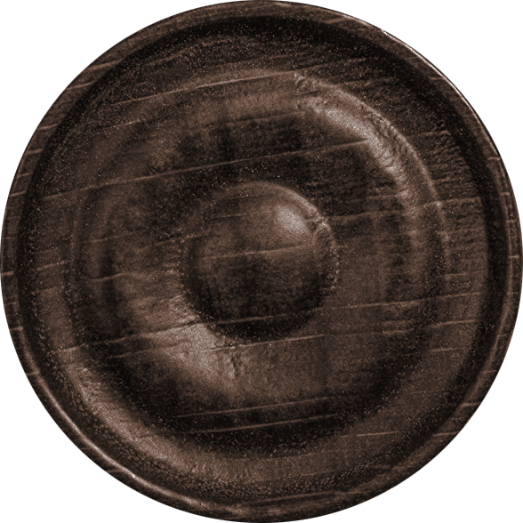
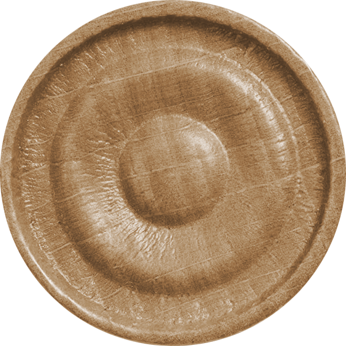

<div class="game-board ">
  {%- for x in range(8) %}
    <div class="row">
      {%- for y in range(8) %}
          <div class="
          {%- if (y+x) % 2 == 1 %} cell-dark {%- endif %} cell-{{ x~'-'~y }}
          col-xs-2 cell" onclick='selectCell([{{ x }}, {{ y }}])'>

          {%- if (y+x) % 2 == 0 and (x >= 0 and x <= 2) %}
          <div class="checker checker-dark" onclick='selectPiece([{{ x }}, {{ y }}])'>
            <!-- {{ x~', '~y }} -->
            
          </div>
          {%- endif %}

          {%- if (y+x) % 2 == 0 and (x >= 5 and x <= 7) %}
          <div class="checker checker-light" onclick='selectPiece([{{ x }}, {{ y }}])'>
            <!-- {{ x~', '~y }} -->
            
          </div>
          {%- endif %}

        </div>
        {%- endfor %}
        <div class="col-xs-2 cell blank-cell"></div>
    </div>
  {%- endfor %}
</div>